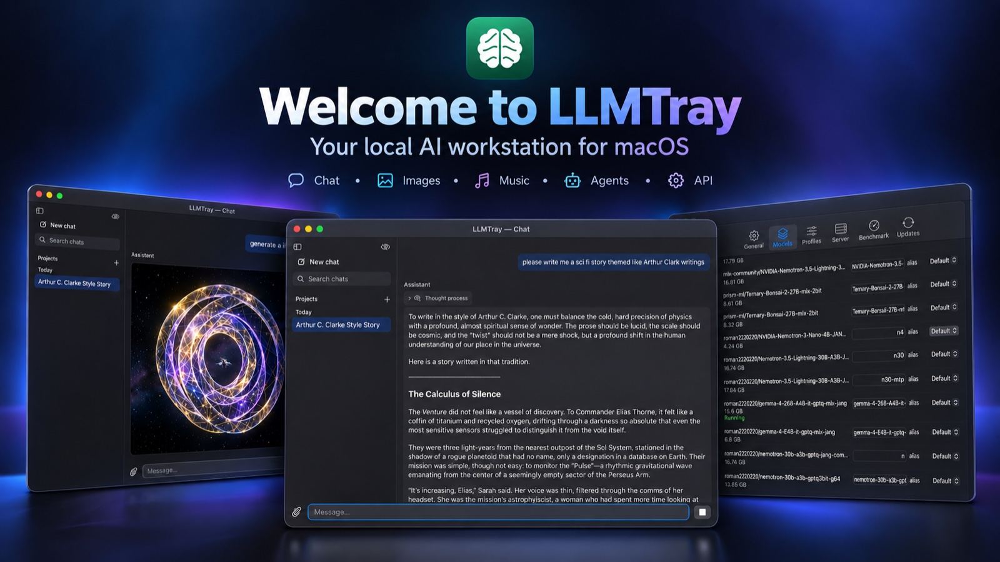

Run local AI on Mac, from the menu bar. An MLX local LLM GUI for macOS: the models run on your own GPU.

Pick a model and LLMTray starts it on your Mac's GPU with mlx-lm. There is no terminal, no cloud account and no API key. The models, and what you give them, stay on the machine. Only the optional web tools (search, news, Wikipedia, weather) send their queries out, and only when the model calls them.
Browse and download MLX models with real progress (speed, ETA, pause/resume) and a size check per file. It also works with the models folder you already have from LM Studio.
Tabs, projects with their own instructions, reasoning you can fold away, and tools the model can call: web search, news, Wikipedia, weather, a calculator and more.
Profiles per model cover sampling, KV-cache quantization and speculative decoding (MTP drafters), plus a benchmark that auto-tunes prefill and concurrency.
The icon shows real state: green while anything generates, including external clients, and orange or red under thermal pressure. A live server log is one click away.
LLMTray serves http://localhost:8765/v1, which is OpenAI-compatible. A client can name a model in each request, and LLMTray switches to it (without one, the loaded model answers). A setting decides whether an outside client may switch models at once, must ask first, or gets the loaded one. Network access is off by default and can be enabled for your local network.
curl http://localhost:8765/v1/chat/completions \
-H "Content-Type: application/json" \
-d '{"model": "<a model from /v1/models>", "messages": [{"role": "user", "content": "Hello"}]}'Point any OpenAI-compatible coding agent, editor extension or script at the local endpoint, and the model reading your code runs on the Mac. The model's profile fills in its sampling defaults for external clients too. Switch between a chat model and a coding model without restarting anything.
export OPENAI_BASE_URL=http://localhost:8765/v1
export OPENAI_API_KEY=local # any value: the local API doesn't check itAsk for a picture, and the chat model writes the prompt for Z-Image Turbo or FLUX.2 klein, running locally. Our GPTQ-quantized checkpoints are published on Hugging Face.
Attach or generate an image and ask for a change, such as "make it night, keep everything else". FLUX.2 klein edits it on your Mac.
ACE-Step 1.5 makes a song from a style and lyrics the model writes. Choose turbo for a fuller mix or sft for clear vocals.
Before an image or song is made, check the prompt, model and settings. It then starts on its own after a short countdown. Make a variant afterwards, or tweak it and try again.
xattr -dr com.apple.quarantine /Applications/LLMTray.app.)For contributing, or to run the latest code:
git clone https://github.com/ipsupport-llc/llmtray.git
cd llmtray
swift build
.build/debug/LLMTray